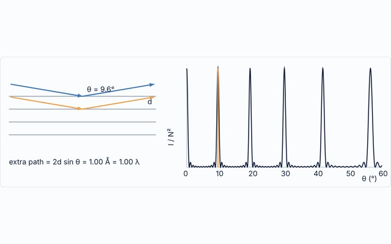
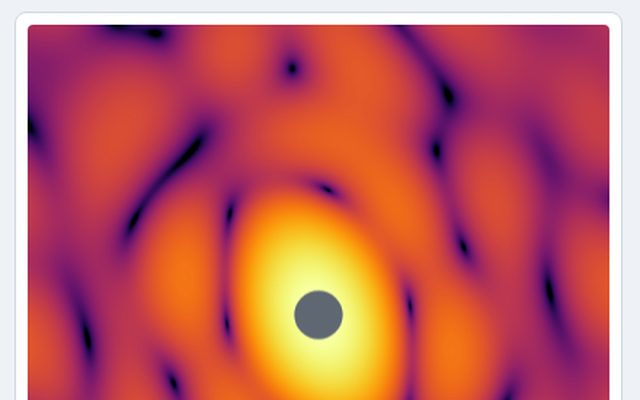
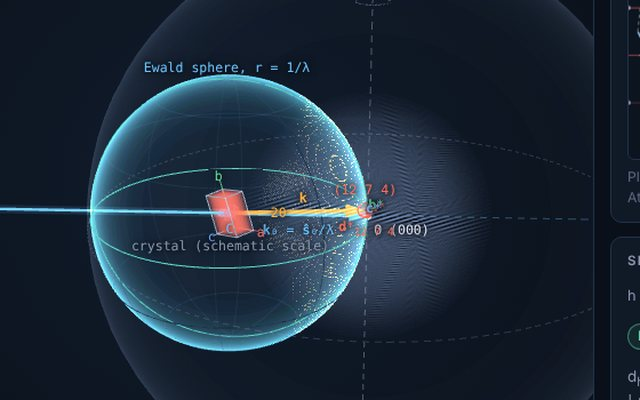
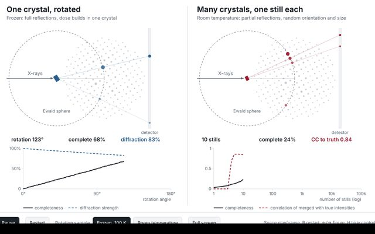
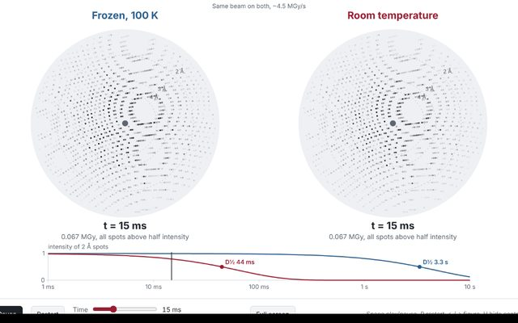
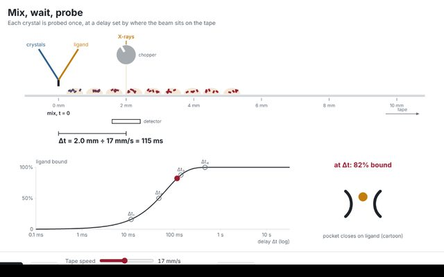
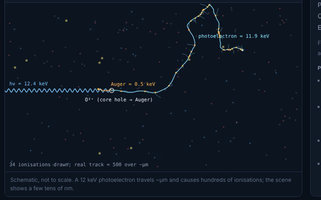
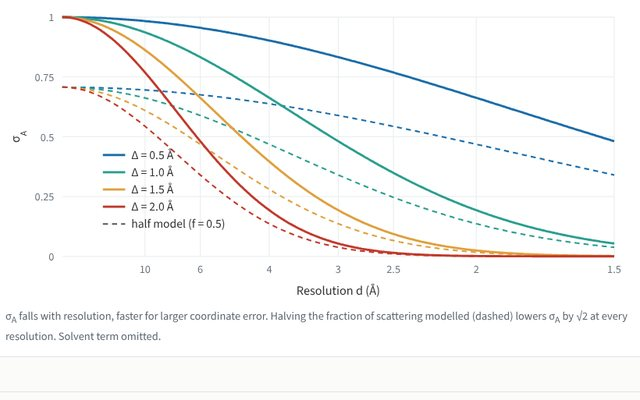

Diffraction basics for biochemistsThe physics behind our jargon: from waves and lattices to serial data and time-resolved difference mapsInteractive · Educational
Visualise diffractionFrom one molecule to a crystal: how a diffraction pattern builds upInteractive · Educational
Ewald sphere constructionCrystals and single molecules: reflections in condition, smearing, modelled intensities and the detectorInteractive · Educational
Rotation vs serial crystallographyHow a rotation series and many serial stills sample reciprocal spaceInteractive · Educational
Diffraction spots fading with doseRadiation damage at 100 K vs room temperatureInteractive · Educational
Mixing device timing simulationsMix, wait, probe: time-resolved crystallography on a tapeInteractive · Educational
Radiation damage in macromolecular crystallographyFrom photoelectric events and radiolysis to specific damage and dose limitsEducational
Molecular replacement and the log-likelihood gainHow a search model is placed in an unknown crystal, and how the LLG shows whether the placement is realEducational Diffraction simulations: nanoBraggBragg spot intensity explorer: cubic insulin on EIGER2 XE 16MInteractive
Diffraction simulations: nanoBraggBragg spot intensity explorer: cubic insulin on EIGER2 XE 16MInteractive Nanocrystal diffraction explorerShape transforms and spot intensities: cubic insulin, 5 µm to 200 nmInteractive
Nanocrystal diffraction explorerShape transforms and spot intensities: cubic insulin, 5 µm to 200 nmInteractive SSX in plates scan planningMX3 SSX scan plannerPlanning tool
SSX in plates scan planningMX3 SSX scan plannerPlanning tool SSX in plates simulationsFly scans in the drop with dose, sample and beam parameters; rough dose estimatesInteractive
SSX in plates simulationsFly scans in the drop with dose, sample and beam parameters; rough dose estimatesInteractive